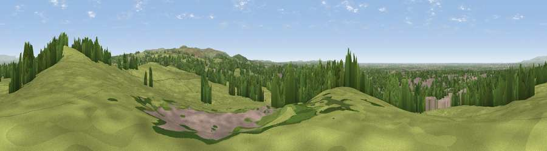

Viewpoint near Whittle le Woods
#11988 in England · top 34% of its area beats it · near Whittle le WoodsWhere it is
The exact computed spot (SD 58875 22475). Click the marker for map links.
The view, rendered

A 360° render of this exact spot computed from the terrain model, tree cover and land cover — summer colours, afternoon light, calibrated against photographs of famous viewpoints. Real trees, hedges and buildings will differ in detail.
The panorama
Grey silhouette: terrain skyline in each direction (720 bearings, Earth curvature and refraction included). Dashed green: skyline with trees (+15 m) and buildings (+8 m) as obstacles. Blue strip: how far the ground is visible on each bearing.
Where the view opens
Wedge length = distance to the farthest visible ground on that bearing (vegetation-aware). Rings at 10, 25 and 50 km.
What fills the view
60% grassland · 25% woodland · 12% built-up · 2% cropland
Angular shares of the visible panorama (visual magnitude), not map area. Landscape diversity 0.44 (0–1 Shannon).
Key numbers
More beautiful places nearby
The staircase of upgrades: each row has a higher view potential than everything closer. Driving times are estimates from straight-line distance, calibrated against real road routing — check an actual route before setting out.
| Place | Direction | Drive | Score |
|---|---|---|---|
| Viewpoint near Whittle le Woods | SW · 1 km | ~2 min | 64.3 |
| Viewpoint near Brindle | NE · 1 km | ~2 min | 66.0 |
| Viewpoint near Chorley | SSE · 5 km | ~11 min | 71.3 |
| Grain Pole Hill | SE · 6 km | ~13 min | 73.6 |
| Viewpoint near Tockholes | E · 8 km | ~17 min | 74.7 |
| Viewpoint near Pleasington | NE · 9 km | ~18 min | 74.8 |
| Darwen Hill | E · 9 km | ~18 min | 80.7 |
| Rivington Pike | SSE · 10 km | ~20 min | 81.9 |
53.69708, -2.62434 · source: screening · position refined by local search. Computed location — check access rights before visiting.